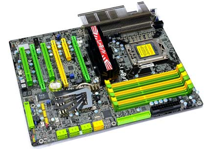
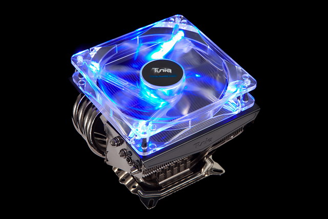
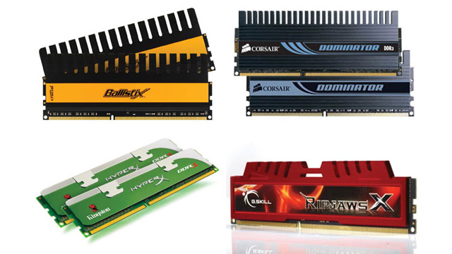
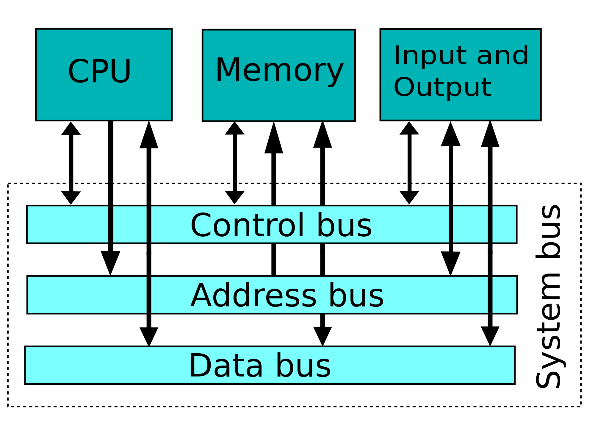
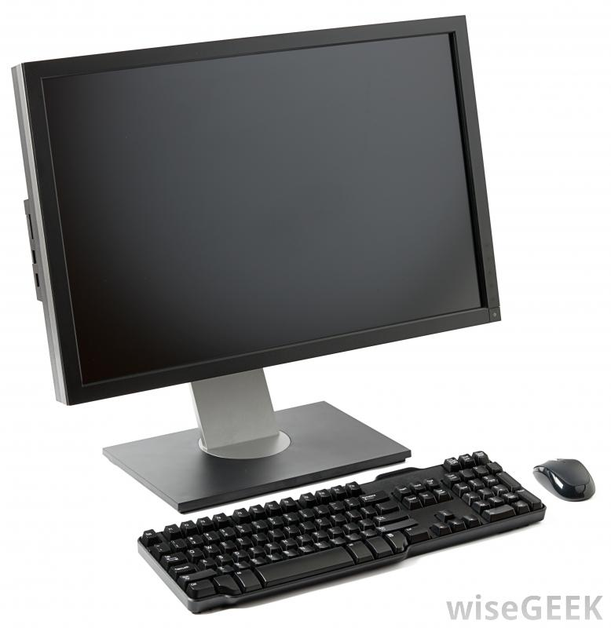

Welcome

Motherboard: The motherboard is basically like the essential part of the computer,
you can think of it as the bones it contains basic circuitry and components. In
some of the AT and ATX motherboard models some parts that are in them are the memory,
microprocessor, expansion slots and interconnecting circuitry. These are just some examples
of what motherboards include, the difference between the models AT and ATX are that the AT
model is a very older design it was created by IBM which is a company that creates machines
and such. The ATX model were made shorter so that they not overlap like the AT models which
were bigger.

CPU: Well first off CPU stands for Central processing unit, just in case you didn’t know.
Which in simple terms you can call it the headquarters, it’s what receives commands and
is the central point of the computer also said to be the most important part of the computer.
The most common components of the CPU are arithmetic log unit and control unit, the arithmetic
log unit is a part of that headquarters which does arithmetic and logical operations. The
control unit is the part of headquarters which get’s instructions from the memory which
then decodes them and starts following them using the Arithmetic logic when needed.

RAM: Is random access memory, which you could think of as temporary memory it saves your things
while your computer is turned on but once it’s off it get’s cleared and everything is sent to your
hard drive. Once you turn it back on all the memory restores once again.
Hard drive: You can think of the hard drive as a file cabinet since it contains all your things inside
it (pictures, music, text, program's, preferences etc..) but if that cabinet get’s destroyed there go
all your files lost, same goes for the hard drive

BUS: You can think of a bus as Fedex they deliver and ship your packages right? Well same as the bus it transmit data from the bus to another part of the computer like the CPU.

Keyboard: A keyboard is what I’m using to type this right now, basically a tool you use to surf the web and send emails, type paragraphs and do other things you usually can’t do without a computer.
Mouse: A mouse is another tool you need to surf the web, it’s the pointer which let’s you click on links on videos etc you can think of it as your finger if you were using an iphone.
Monitor:The monitor is just like a TV it displays what the computer is working on.